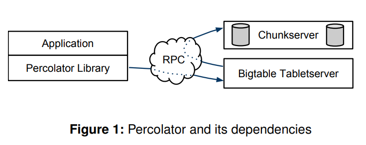
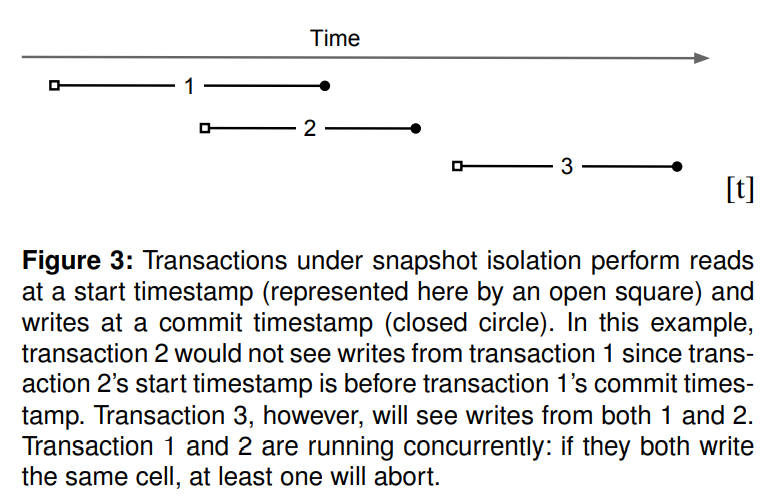

[OSDI'10] Large-scale Incremental Processing Using Distributed Transactions and Notifications 论文阅读
MapReduece 系统解决了海量数据索引创建的问题, 但 MR 并没有解决增量数据的实时更新问题. 本文介绍了 Percolator 系统, 讨论了如何在不支持跨行事务的 BigTable 上, 实现大规模增量处理系统.
#引言
考虑构建一个用于回答搜索查询的网络索引系统. 该索引系统首先抓取网络上的每一个页面并进行处理, 同时在索引中维护一组不变规则. 例如, 如果相同内容在多个 URL 下被抓取, 则只有 PageRank 值最高的 URL 会被保留并出现在索引中. 系统会对每个链接执行反向链接处理, 使每个出站链接的锚文本被记录并指向其目标页面. 反向链接过程必须能够正确处理重复页面. 当链接指向某个页面的重复副本时, 这些链接应在必要时被重定向到 PageRank 值最高的那个重复页面.
这是一个典型的批量处理任务. 该任务可以表示为一系列 MapReduce 操作. 例如, 一个 MapReduce 作业用于对重复页面进行聚类. 另一个 MapReduce 作业用于执行链接反转等处理步骤. 由于 MapReduce 限制了计算的并行度, 因此系统中的不变性相对容易维护. 在进入下一个处理阶段之前, 所有文档都会完整地执行当前处理步骤. 例如, 当索引系统正在写入指向当前 PageRank 值最高 URL 的反向链接时, 我们无需担心该 URL 的 PageRank 值会在此过程中发生变化. 这是因为在之前的 MapReduce 步骤中, 其 PageRank 值已经被确定并固定下来.
现在, 考虑在仅重新抓取了一小部分网页之后, 如何对索引进行更新. 仅对新抓取的页面运行 MapReduce 是不充分的. 原因在于, 新抓取的页面可能与网页集合中的其他页面之间存在链接关系. 因此, 必须对整个存储库重新运行 MapReduce, 包括新页面和已有页面. 如果计算资源充足, MapReduce 的良好可扩展性使这种全量重计算方法在实践中是可行的. 事实上, 在本文所述工作之前, 谷歌的网络搜索索引正是通过这种方式构建的. 然而, 重新处理整个网页集合会丢弃之前计算所积累的结果. 同时, 这种方法的处理延迟与存储库的整体规模成正比, 而不是与实际更新的数据量成正比.
另一种思路是将整个存储库存放在数据库管理系统中. 索引系统可以通过事务方式对单个文档进行更新, 从而维护数据不变性. 然而, 现有的数据库管理系统无法处理如此庞大的数据规模. 谷歌的索引系统需要在数千台机器上存储数十 PB 级别的数据. 诸如 Bigtable 之类的分布式存储系统可以扩展到这种规模. 但这类系统并未向程序员提供在并发更新场景下维护数据不变性的高层工具或抽象.
理想的网络搜索索引数据处理系统应当针对增量处理进行优化. 也就是说, 该系统能够维护一个规模极其庞大的文档库. 并且在每次抓取少量新文档时, 都能高效地对现有文档库进行更新. 由于系统会同时处理大量细粒度的更新操作, 理想的系统还应提供机制, 以在并发更新条件下保持数据不变性. 同时, 系统还需要能够跟踪哪些更新已经被成功处理.
本文余下部分将介绍一种具体的增量处理系统, 即 Percolator. Percolator 为用户提供对多 PB 级别存储库的随机访问能力. 随机访问使我们能够处理单独文档, 而无需像 MapReduce 那样处理整个存储库. 为了实现高吞吐量, 需要在多台机器上同时使用多个线程来转换仓库. 因此, Percolator 提供了符合 ACID 标准的事务, 使程序员更容易理解仓库的状态. 我们目前实现了快照隔离语义.
除了考虑并发性之外, 增量系统的程序员还需要跟踪增量计算的状态. 为了帮助他们完成这项任务, Percolator 提供了观察者机制: 当用户指定的列发生变化时, 系统会调用一段代码. Percolator 应用程序由一系列观察者构成. 每个观察者完成一项任务, 并通过向表中写入数据, 为“下游”观察者创造更多工作. 外部进程通过向表中写入初始数据来触发链中的第一个观察者.
Percolator 专为增量处理而设计, 并非旨在取代现有解决方案来处理大多数数据处理任务. 对于无法将结果分解为小更新的计算 (例如文件排序), MapReduce 更为合适. 此外, 此类计算应具有强一致性要求, 否则 Bigtable 就足够了. 最后, 此类计算在某些维度上 (例如数据总量、转换所需的 CPU 资源等) 应非常庞大. 不适合 MapReduce 或 Bigtable 的较小规模计算可以使用传统的数据库管理系统 (DBMS) 来处理.
在谷歌内部, Percolator 的主要应用是准备网页以纳入实时网络搜索索引. 通过将索引系统转换为增量系统, 我们能够在抓取文档的同时进行处理. 这使得平均文档处理延迟降低了 100 倍, 文档在搜索结果中的平均出现时间也缩短了近 50% (搜索结果的出现时间还包含索引以外的延迟, 例如文档更改到被抓取之间的时间). 该系统还被用于将网页渲染成图像. Percolator 会跟踪网页与其依赖资源之间的关系, 以便在任何依赖资源发生更改时重新处理网页.
#设计

Percolator 提供了两种主要的抽象方式, 用于大规模执行增量处理:
- 在存储库上随机访问的 ACID 事务
- 观察者 (observer) 机制, 用于组织增量计算
Percolator 系统由三个二进制文件组成, 它们运行在集群中的每台机器上:
- Percolator 工作进程
- Bigtable Tablet Server
- GFS Chunk Server
所有观察者都链接到 Percolator 工作进程, 该进程扫描 Bigtable 以查找已更改的列 (“通知”), 并在工作进程中以函数调用的形式调用相应的观察者. 观察者通过向 Bigtable Tablet Server 发送读/写 RPC 来执行事务, Tablet Server 再向 GFS Chunk Server 发送读/写 RPC.
该系统还依赖于两个小型服务:
- 时间戳服务(Timestamp Oracle)
- 轻量级锁服务 (基于 Chubby)
时间戳服务提供严格递增的时间戳, 这是快照隔离协议正确运行所必需的属性. 工作进程使用轻量级锁服务来提高查找脏通知的效率.
从程序员的角度来看, Percolator 存储库由少量表组成. 每个表都是一系列“单元格”的集合, 这些单元格按行和列进行索引. 每个单元格包含一个值: 一个未经解释的字节数组. (在内部, 为了支持快照隔离, 每个单元格表示为一系列按时间戳索引的值. )
Percolator 的设计受到大规模运行需求和对延迟要求不高的影响. 放宽延迟要求使我们可以采用惰性方法来清理在故障机器上运行的事务遗留的锁. 这种惰性且易于实现的方法可能会使事务提交延迟数十秒. 对于运行 OLTP 任务的数据库管理系统 (DBMS) 而言, 这种延迟是不可接受的, 但对于构建 Web 索引的增量处理系统而言, 则是可以容忍的.
Percolator 没有集中式的事务管理位置. 特别是, 它缺少全局死锁检测器. 这增加了冲突事务的延迟, 但也使系统能够扩展到数千台机器.
#Bigtable 简介
Percolator 构建于 Bigtable 分布式存储系统之上.
Bigtable 向用户呈现一个多维排序映射: 键是 (行、列、时间戳) 元组. Bigtable 支持对每一行进行查找和更新操作, 并且行事务支持对单行进行原子 RMW 操作. Bigtable 可以处理 PB 级数据, 并在大量不可靠的机器上可靠运行.
一个运行中的 Bigtable 由一组 Tablet 服务器组成, 每个 Tablet 服务器负责服务多个 Tablet (键空间中的连续区域). 主服务器协调 Tablet 服务器的运行, 例如指示它们加载或卸载 Tablet. 每个 Tablet 都以只读的 Google SSTables 格式文件集合的形式存储.
SSTable 存储在 GFS 文件系统中. Bigtable 依赖 GFS 在磁盘丢失时保存数据. Bigtable 允许用户通过将一组列分组到一个位置组中来控制表的性能特征. 每个位置组中的列都存储在各自的 SSTable 集合中, 这样可以降低扫描成本, 因为无需扫描其他列中的数据.
基于 Bigtable 构建 Percolator 的决定奠定了其整体架构. Percolator 保留了 Bigtable 接口的核心: 数据以 Bigtable 的行和列形式组织, Percolator 元数据则存储在旁边的特殊列中. Percolator 的 API 与 Bigtable 的 API 非常相似: Percolator 库主要由封装在 Percolator 特有计算中的 Bigtable 操作组成. 因此, 实现 Percolator 的挑战在于提供 Bigtable 所不具备的功能: 多行事务和观察者框架.
#事务
1 | // 图 2: 使用 Percolator 进行文档聚类和去重的代码样例 |
Percolator 提供跨行、跨表事务, 并具备 ACID 快照隔离语义. Percolator 用户使用命令式语言 (目前为 C++) 编写事务代码, 并将对 Percolator API 的调用与代码混合使用. 图 2 展示了一个简化的文档聚类示例, 该聚类基于文档内容的哈希值. 在本例中, 如果 Commit() 返回 false, 则表示事务发生冲突 (在本例中是因为同时处理了两个具有相同内容哈希值的 URL), 应在退避后重试. Get() 和 Commit() 的调用是阻塞的; 并行性是通过在线程池中同时运行多个事务来实现的.
虽然可以在没有强事务的情况下增量处理数据, 但事务使用户更容易理解系统状态, 并避免在长期存在的存储库中引入错误. 例如, 在事务型 Web 索引系统中, 程序员可以做出这样的假设: 文档内容的哈希值始终与索引重复项的表保持一致. 如果没有事务, 一次不合时宜的崩溃可能会导致永久性错误: 文档表中的某个条目在重复项表中找不到对应的 URL. 事务还使得构建始终保持最新且一致的索引表变得容易. 请注意, 这两个示例都需要跨行事务, 而不是 Bigtable 已提供的单行事务.

Percolator 使用 Bigtable 的时间戳维度存储每个数据项的多个版本. 多个版本是实现快照隔离所必需的, 它使每个事务看起来像是从某个时间戳的稳定快照中读取数据. 写入操作则出现在不同且较晚的时间戳中. 快照隔离机制可以防止写-写冲突: 如果并发运行的事务 A 和 B 写入同一个单元格, 则最多只有一个事务会被提交. 快照隔离不提供可串行化; 特别是, 在快照隔离下运行的事务容易受到 Write Skew 的影响. 快照隔离相对于可串行化协议的主要优势在于更高效的读取. 由于任何时间戳都代表一个一致的快照, 因此读取单元格只需要在给定的时间戳执行 Bigtable 查找; 无需获取锁. 图 3 展示了快照隔离下事务之间的关系.
由于 Percolator 是作为访问 Bigtable 的客户端库构建的, 而不是直接控制存储访问, 因此它在实现分布式事务方面面临着与传统并行数据库管理系统 (PDBMS) 不同的挑战. 其他并行数据库将锁定机制集成到管理磁盘访问的系统组件中: 由于每个节点已经负责协调对磁盘数据的访问, 因此它可以对请求授予锁, 并拒绝违反锁定要求的访问. 相比之下, Percolator 中的任何节点都可以 (并且确实会) 发出请求直接修改 Bigtable 中的状态: 没有方便的地方可以拦截流量并分配锁. 因此, Percolator 必须显式地维护锁:
- 容灾: 即使机器发生故障, 锁也必须保持有效; 如果锁在通信的两次提交之间丢失, 那么系统将会错误地提交两个本应冲突的事务.
- 锁服务必须提供高吞吐量; 成千上万台机器将同时请求锁.
- 锁服务还应具有低延迟; 每个 Get() 操作除了读取数据外, 还需要读取锁, 我们希望尽可能降低这种延迟.
鉴于这些要求, 锁服务器需要进行复制 (以应对故障)、分布式和负载均衡 (以处理负载), 并写入持久数据存储. Bigtable 本身满足我们所有要求, 因此 Percolator 将其锁存储在与数据相同的 Bigtable 中的特殊内存列里, 并在访问该行数据时, 通过 Bigtable 的行事务读取或修改锁.
1 | class Transaction { |
图 6: Percolator 事务伪代码
现在我们将更详细地探讨事务协议. 图 6 显示了 Percolator 事务的伪代码, 图 4 显示了事务执行期间 Percolator 数据和元数据的布局. 系统使用的各种元数据列在图 5 中进行了描述. 事务构造函数会向时间戳服务请求起始时间戳 (start_ts), 该时间戳决定了 Get() 函数所看到快照的一致性. Set() 函数的调用会被缓冲 (第 7 行), 直到提交时才会执行. 提交缓冲写入的基本方法是由客户端协调的两阶段提交. 不同机器上的事务通过 Bigtable Tablet 服务器上的行事务进行交互.
1 | // Prewrite tries to lock cell w, returning false in case of conflict. |
在提交的第一阶段 (Prewrite), 我们会尝试锁定所有正在写入的单元格. 为了处理客户端故障, 我们会任意指定一个锁作为主锁; 我们将在下文讨论这一机制. 事务会读取元数据, 以检查每个正在写入的单元格是否存在冲突. 元数据冲突有两种情况: 如果事务在其起始时间戳之后发现另一个写入记录, 则会中止 (第 32 行); 这正是快照隔离机制用于防范的写-写冲突. 如果事务在任意时间戳发现另一个锁, 也会中止 (第 34 行). 另一个事务可能只是在提交到我们起始时间戳之后延迟释放其锁, 但我们认为这种情况不太可能发生, 因此会选择中止当前事务. 如果没有冲突, 我们会向每个单元的起始时间戳写入锁和数据. 如果没有冲突的单元格, 事务可以提交并进入第二阶段.
1 | bool Commit() { |
在第二阶段开始时, 客户端从时间戳服务获取提交时间戳 (第 48 行). 随后, 客户端在每个单元格上 (从主单元格开始) 释放其锁, 并通过将锁替换为写入记录, 使写入对读者可见. 写入记录向读者表明该单元格中存在已提交的数据. 它包含一个指向起始时间戳的指针, 读者可以通过该时间戳找到实际数据. 一旦主单元格的写入变得可见 (第 58 行), 事务就必须提交, 因为它已经使写入结果对读者可见.
1 | bool Get(Row row, Column c, std::string *value) { |
Get() 操作首先检查时间戳范围 [0, start_ts] 内是否存在锁, 该范围对应事务快照中可见的时间戳区间 (第 12 行). 如果存在锁, 则表示另一个事务正在并发写入该单元格, 因此读取事务必须等待锁被释放. 如果未发现冲突的锁, Get() 会读取该时间戳范围内最新的写入记录 (第 19 行), 并返回与该写入记录对应的数据项 (第 22 行).
由于可能发生客户端故障, 事务处理过程会变得更加复杂. Tablet 服务器故障不会影响系统, 因为 Bigtable 能保证在 Tablet 服务器故障后, 已写入的锁仍然有效. 如果客户端在事务提交过程中发生故障, 则会遗留锁. 如果不清理这些锁, 后续事务可能会无限期地阻塞. 为此, Percolator 采用惰性清理策略: 当事务 A 遇到事务 B 遗留下来的冲突锁时, A 可以判断事务 B 已经失败, 并负责清除其锁.
图 5: Percolator 列 c 在 Bigtable 中的布局
| 列名 | 说明 |
|---|---|
| c:lock | An uncommitted transaction is writing this cell; contains the location of primary lock |
| c:write | Committed data present; stores the Bigtable timestamp of the data |
| c:data | Stores the data itself |
| c:notify | Hint: observers may need to run |
| c:ack | Observer “O” has run ; stores start timestamp of successful last run |
事务 A 很难完全确认事务 B 是否已经失败. 因此, 必须避免 A 清理 B 的事务与实际上并未失败的 B 正在提交同一事务之间发生竞争. Percolator 通过在每个事务中指定一个单元格作为所有提交或清理操作的同步点来解决这一问题. 该单元格上的锁称为主锁. 事务 A 和事务 B 都会就主锁的位置达成一致, 主锁的位置会被写入所有其他单元格的锁中. 无论是执行清理操作还是提交操作, 都必须修改主锁. 由于该修改是在 Bigtable 行事务下完成的, 因此清理和提交操作中最多只有一个能够成功. 具体而言, 在事务 B 提交之前, 它必须检查自己是否仍然持有主锁, 并将主锁替换为写入记录. 在事务 A 擦除 B 的锁之前, A 必须检查主锁以确认 B 尚未提交. 如果主锁仍然存在, 则可以安全地清除对应的锁.
当客户端在提交的第二阶段发生崩溃时, 事务已经越过提交点 (至少写入了一条写入记录), 但仍然可能存在锁. 我们必须对这些事务执行前滚操作. 遇到锁的事务可以通过检查主锁来区分两种情况: 如果主锁已被写入记录替换, 则写入该锁的事务必定已经提交, 并且该锁必须被前滚. 否则, 应当回滚, 因为我们总是先提交主锁, 因此如果主锁尚未提交, 可以确保回滚是安全的. 在执行前滚时, 负责清理的事务会像原始事务一样, 将尚未解锁的锁替换为写入记录.
由于清理操作是在主锁上进行同步的, 因此清理由仍然活跃的客户端所持有的锁在语义上是安全的. 然而, 这样做会带来性能损失, 因为回滚会强制事务中止. 因此, 事务只有在怀疑锁属于已经失效或卡死的 Worker 时, 才会执行锁清理操作. Percolator 使用一种简单的机制来判断其他事务是否仍然处于活跃状态. 正在运行的 Worker 会向 Chubby 锁服务写入一个令牌, 用于表明它们仍然属于该系统. 其他 Worker 可以通过该令牌是否存在来判断对应的 Worker 是否仍然存活, 该令牌会在进程退出时自动删除. 为了处理仍然存活但未执行任何操作的 Worker, 我们还会将运行时间写入锁中. 即使 Worker 的活跃令牌仍然有效, 只要锁中记录的运行时间过旧, 该锁也会被清理. 为了支持长时间运行的提交操作, Worker 会在提交过程中定期更新该运行时间.
#时间戳
时间戳服务是一个严格按递增顺序分发时间戳的服务. 由于每个事务都需要两次联系时间戳服务, 因此该服务必须具备良好的可扩展性. 时间戳服务会定期分配一个时间戳范围, 并将所分配时间戳的最大值写入稳定存储. 在给定已分配时间戳范围的情况下,时间戳服务可以完全从内存中满足后续请求. 如果服务重启, 时间戳会向前跳到已分配的最大值, 但绝不会回退. 为了节省 RPC 开销 (代价是增加事务延迟), 每个 Percolator 工作进程通过仅维护一个待处理的 RPC 请求来跨事务处理时间戳请求. 随着时间戳服务负载的增加, 批处理规模会自然增大以进行补偿. 批处理提升了时间戳服务的可扩展性, 但不会影响时间戳准确性的保证. 我们的时间戳服务在单台机器上每秒可提供约 200 万个时间戳.
事务协议使用严格递增的时间戳来保证 Get() 返回事务开始时间戳之前所有已提交的写入操作. 为了理解该机制如何提供这一保证, 考虑一个在时间戳 进行读取的事务 R, 以及一个在时间戳 进行写入的事务 W. 我们将证明事务 R 一定能够看到事务 W 的写入操作. 由于, 我们知道时间戳服务要么在 之前, 要么与 位于同一批次中分发了. 因此, 事务 W 在事务 R 接收到其起始时间戳 之前请求了时间戳. 同时, 事务 R 在接收到其起始时间戳 之前无法执行任何读取操作, 而事务 W 在请求其提交时间戳之前已经写入了锁. 由此可知, 在 R 执行任何读取操作之前, W 至少已经写入了所有锁. 因此, R 的 Get() 操作要么看到已完全提交的写入记录, 要么看到锁, 在后一种情况下, R 将阻塞直到锁被释放. 无论出现哪种情况, 事务 W 的写入操作对于事务 R 的 Get() 操作都是可见的.
#通知机制
事务允许用户在保持数据一致性的前提下修改表, 但用户还需要一种机制来触发并运行这些事务. 在 Percolator 中, 用户编写称为 “观察器” 的代码, 这些代码会在表发生变化时被触发. 我们将所有观察器链接到一个二进制文件中, 该文件会与系统中的每个 Tablet 服务器一同运行. 每个观察器都会向 Percolator 注册一个函数以及一组列. 当任意行中的某一列被写入数据时, Percolator 就会调用对应的函数.
Percolator 应用由一系列观察器构成. 每个观察器完成一项特定任务, 并通过写入表为 “下游” 观察器创造更多工作. 在我们的索引系统中, MapReduce 通过运行加载器事务将抓取到的文档加载到 Percolator 中. 这些加载器事务会触发文档处理器事务, 用于对文档进行索引处理 (例如解析内容、提取链接等). 文档处理器事务还会进一步触发其他事务, 例如聚类事务. 聚类事务随后会触发将更新后的文档聚类结果导出到服务系统的事务.
通知机制类似于活动数据库中的数据库触发器或事件, 但与数据库触发器不同的是, 通知不能用于维护数据库不变性. 具体而言, 被触发的观察器是在与触发写入操作不同的事务中运行的. 因此, 触发写入操作与观察器产生的写入操作并不是原子执行的. 通知的设计目标是支持增量计算, 而不是维护数据完整性.
这种在语义和设计目标上的差异, 使得观察器的行为比具有重叠触发器的复杂语义更容易理解. Percolator 应用通常只包含极少量的观察器. 例如, Google 索引系统中大约只有 10 个观察器. 每个观察器都会在工作进程二进制文件的 main() 函数中被显式构造, 因此可以清楚地知道当前哪些观察器处于活动状态. 多个观察器可以同时观察同一列, 但我们刻意避免使用这一特性, 以便明确在写入某一特定列时究竟会运行哪个观察器. 用户确实需要注意避免通知形成无限循环, 但 Percolator 并未提供自动防护机制. 通常, 用户会通过合理设计观察器之间的调用关系来避免这种问题.
我们提供一项明确的保证: 对于被观察列的每一次变更, 最多只会有一个观察器事务成功提交. 但反过来并不成立: 对同一被观察列的多次写入, 可能只会触发观察器运行一次. 我们将这一特性称为消息折叠. 消息折叠通过将多个通知的处理成本合并, 从而避免重复计算. 例如, 只需要定期重新处理 http://google.com, 而不必在每次发现指向它的新链接时都重新处理.
为了实现上述通知语义, 每个被观察列都对应一个 “确认” 列. 该列中存储的是观察器最近一次运行时的起始时间戳. 当被观察列被写入时, Percolator 会启动一个事务来处理该通知. 该事务会同时读取被观察列及其对应的确认列. 如果被观察列是在上一次确认之后写入的, 则运行观察器, 并将确认列更新为当前事务的起始时间戳. 否则, 说明观察器已经针对该变更运行过, 因此不会再次执行. 需要注意的是, 如果 Percolator 意外地针对同一通知并发启动了两个事务, 它们都会看到该通知并尝试运行观察器. 但其中一个事务会因为确认列上的冲突而中止. 因此, 我们可以保证针对每个通知, 最多只有一个观察器事务能够成功提交.
为了支持通知机制, Percolator 需要高效地定位需要运行观察器的脏单元格. 由于通知数量相对稀少, 这一搜索过程变得颇具挑战性. 系统中的表可能包含数万亿个单元格, 但在系统能够跟上负载的情况下, 通知数量通常只有数百万级别. 此外, 观察器代码运行在分布于多台机器上的大量客户端进程中, 这意味着对脏单元格的搜索也必须以分布式方式进行.
为此, Percolator 维护了一个特殊的 Bigtable 列 “notify”, 其中为每个脏单元格保存一条记录. 当事务写入某个被观察的单元格时, 它也会同时设置对应的通知单元格. 工作进程会对 notify 列执行分布式扫描, 以查找需要处理的脏单元格. 在观察器被触发且相关事务成功提交后, 对应的通知单元格会被移除. 由于 notify 列只是一个普通的 Bigtable 列, 而不是 Percolator 管理的事务列, 因此它不具备事务语义. 它仅作为扫描提示, 用于引导系统去检查确认列, 从而判断是否需要运行观察器.
为了进一步提高扫描效率, Percolator 将 notify 列存储在一个单独的 Bigtable 局部性组中. 这样, 在扫描时只需要读取数百万个通知单元格, 而无需扫描数万亿个数据单元格. 每个 Percolator 工作进程都会分配多个线程专门用于执行扫描操作.
每个工作进程负责扫描表的一部分. 它首先随机选择一个 Bigtable Tablet, 然后在该 Tablet 中随机选择一个键, 最后从该键的位置开始扫描表, 以此确定要扫描的区域. 由于每个工作进程扫描的是表中的随机区域, 我们担心两个工作进程可能同时对同一行运行观察器. 虽然由于通知的事务特性, 这种行为不会影响正确性, 但会显著降低效率. 为避免这种情况, 每个工作进程在扫描行之前都会从一个轻量级锁服务获取锁. 这个锁服务器不需要持久化状态, 因为它仅提供建议, 因此具有很高的可扩展性.
随机扫描方法需要进行额外调整. 在最初部署时, 我们注意到扫描线程倾向于聚集在表格的几个区域, 降低了扫描的并行性. 这种现象类似公共交通系统中所谓的“编队行驶”或“公交车聚集”现象: 当公交车减速 (可能因交通拥堵或乘客上车缓慢) 时, 后续公交车会加速以弥补时间差, 导致多辆公交车同时到达同一站点. 我们的扫描线程也出现了类似情况: 运行观察器的线程速度减慢, 而后续线程会快速跳过已清理的行, 与领先线程聚集在一起. 由于线程聚集导致 Tablet 服务器过载, 后续线程无法超越前面线程. 为解决这一问题, 我们改进了系统: 当扫描线程发现自己正在扫描另一线程的同一行时, 它会在表中随机选择一个新位置继续扫描. 这种改进类似于公交车在过近时瞬移到随机站点, 以避免拥堵.
最后, 基于通知的经验, 我们引入了一种更轻量级但语义较弱的通知机制. 在并发处理同一页面的多个副本时, 每个事务都会尝试触发对同一重复集群的重新处理, 从而引发冲突. 为避免事务冲突, 我们设计了弱通知机制: 事务仅写入 Bigtable 的 notify 列. 为了保持 Percolator 其他部分的事务语义, 弱通知仅限于一种特殊类型的列, 该列不能写入, 只能用于通知. 较弱的语义意味着单个弱通知可能导致多个观察者同时运行并提交, 但系统会尽量减少这种情况. 这一机制有助于管理冲突; 如果某个观察者在热点上频繁发生冲突, 通常可以将其拆分为两个观察者, 并通过热点上的非事务通知连接起来以缓解冲突.
#讨论
相对于基于 MapReduce 的系统, Percolator 的一个效率瓶颈在于每个工作单元发送的 RPC 次数. MapReduce 只需对 GFS 执行一次大规模读取, 即可获取数十甚至数百个网页的所有数据. 而 Percolator 在处理单个文档时, 需要执行约 50 次独立的 Bigtable 操作.
在提交过程中会产生额外的 RPC 请求. 写入锁时, 需要执行读-修改-写操作, 这涉及两次 Bigtable RPC 调用: 一次用于读取是否存在冲突的锁或写入操作, 另一次用于写入新锁. 为降低开销, 我们修改了 Bigtable API, 添加条件变更功能, 从而在单个 RPC 中完成读-修改-写操作. 发往同一 Tablet 服务器的多个条件变更操作也可以批量合并到单个 RPC 中, 以进一步减少 RPC 总数. 我们通过将锁操作延迟几秒钟来形成批次, 从而将它们收集在一起. 由于锁是并行获取的, 这只会增加每个事务几秒钟的延迟, 我们通过更高的并行度来弥补额外的延迟. 批量处理也会增加潜在冲突窗口, 但在低竞争环境中, 这并未造成问题.
在从表中读取数据时, 我们也采用相同的批处理策略. 每次读取操作都会被延迟, 以便有机会与其他读取同一 Tablet 服务器的操作组成批次. 这可能会增加每次读取的延迟, 从而显著增加事务延迟. 然而, 最终的优化措施是预取. 预取利用了这样一个事实: 读取同一行中的多个值与读取一个值的成本基本相同. Bigtable 必须从文件系统中读取整个 SSTable 块并解压缩, 无论读取多少列. Percolator 会在读取每列时尝试预测事务随后将访问该行中的哪些其他列. 预测基于历史访问行为. 预取与已读取项缓存结合, 可将系统原本需要执行的 Bigtable 读取次数减少约 10 倍.
在 Percolator 的早期实现阶段, 我们将所有 API 调用设置为阻塞式, 并依靠每台机器运行数千个线程以提供足够并行度, 从而保持良好的 CPU 利用率. 我们选择 thread-per-request 模型主要是为了简化应用程序代码的编写. 相比之下, 事件驱动模型虽然更高效, 但需要用户在每次 (或多次) 从表中获取数据项时打包状态, 这会大幅增加应用开发复杂度.
总体而言, thread-per-request 模型带来的体验是积极的: 应用程序代码简洁, 在多核机器上实现了良好的资源利用率, 并且完整且有意义的堆栈跟踪简化了崩溃调试. 我们在应用程序中遇到的竞态条件比预期要少. 这种方法的主要缺点是 Linux 内核和谷歌基础设施在高线程数下存在可扩展性问题. 我们的内核开发团队已经部署了修复程序, 以解决这些内核问题.
#参考资料
- Percolator 和 TiDB 事务算法
- TiKV 事务模型概览, Google Spanner 开源实现
Percolator 是 Google 的上一代分布式事务解决方案, 构建在 BigTable 之上, 在 Google 内部用于网页索引更新的业务. 原理比较简单, 总体来说就是一个经过优化的 2PC 的实现, 依赖一个单点的授时服务 TSO 来实现单调递增的事务编号生成, 提供 SI 的隔离级别.
传统的分布式事务模型中, 一般都会有一个中央节点作为事务管理器, Percolator 的模型通过对于锁的优化, 去掉了单点的事务管理器的概念, 将整个事务模型中的单点局限于授时服务器上, 在生产环境中, 单点授时是可以接受的, 因为 TSO 的逻辑极其简单, 只需要保证对于每一个请求返回单调递增的 id 即可, 通过一些简单的优化手段 (比如 pipeline) 性能可以达到每秒生成百万 id 以上, 同时 TSO 本身的高可用方案也非常好做, 所以整个 Percolator 模型的分布式程度很高.
- Optimized Percolator in TiKV: 提到了对 Percolator 的几种优化, parallel prewrite, short value in write column 和 point read without timestamp Two-phase Commit
- 分布式系统的时间
- TiDB Percolator 事务实现解析
- 基于 KV 的分布式事务方案
- 数据库内核月报 － 2018 / 11 – Database · 原理介绍 · Google Percolator 分布式事务实现原理解读
- Percolator 论文阅读笔记
- Jepsen Test 关于Consistency Models的总结: